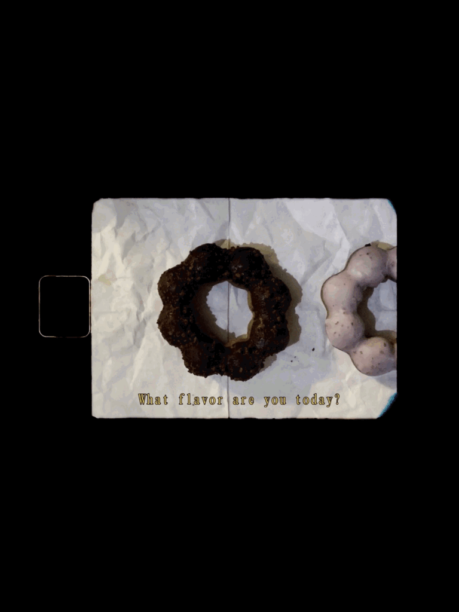

📚 閱讀｜在他人的故事裡尋找自己
閱讀是我最重要的日常之一。
從小說、散文到漫畫， 我喜歡透過文字接觸不同生命經驗， 也在故事裡重新理解自己與世界。
閱讀培養了我的觀察能力與思考習慣， 讓我對社會與文化保持好奇。 也讓我在課堂之外， 接觸更多關於社會、文化與地方的議題， 培養理解不同觀點的能力。
🎬 電影｜透過影像理解世界
電影是我最喜歡的休閒活動之一，假日最常出沒的地方就是電影院。 電影裡什麼都有，如夢一般，是最小幅度的逃避。
從青春電影、紀錄片到藝術電影， 我喜歡透過不同的故事與角色， 看見各種人生選擇與時代背景。 電影之於我猶如踏入一場奇幻的仙境。 在黑暗中，靜靜地坐著，窺探他人的人生， 透過導演的鏡頭觀看這個世界，這樣子就足夠了。
觀影的過程讓我學會從更多角度理解他人的處境， 也讓我開始關注文化、歷史與社會議題。
🎸 音樂｜生活裡的陪伴
音樂是我生活中不可或缺的一部分。
不同時期總有不同循環播放的歌曲， 它們記錄著當下的情緒與生活狀態。 無論是通勤、閱讀或整理思緒時， 音樂都陪伴著我的日常。
除了聆聽音樂之外， 我也從國中開始自學吉他。 在一次次練習中， 學習用不同的方式感受與表達情感。
參加演唱會時眼前的人從耳機裡走出來了， 看著崇拜的人享受著舞台，閃閃發亮地綻放笑容，讓人的心情不自覺地奔騰起來。 投射燈灑落，台上的人彷彿就是光本身，照亮著底下的我們，總能重新獲得對生活的能量。
✈️ 旅行｜走進不同的風景
我喜歡透過旅行認識不同地方的風景與生活樣貌。
每到新的地方， 我總會習慣用手機記錄沿途的景色、 街道與人群， 記下我眼中的世界。
對我而言，旅行不只是移動到另一個地方，更是一種觀察世界與重新認識自己的方式。透過接觸不同城市的街景、文化與生活節奏，我發現每個地方都有自己的故事。
每一次出發，都讓我學會用更多元的角度看待世界，也提醒自己保持好奇心。 那些旅途中留下的照片，不只是紀錄風景，更保存了當下的感受與回憶。
🏐 系排｜在團隊中學習成長
進入大學後，我加入系排， 希望在課業之外培養運動習慣， 也認識更多不同年級的同學。
排球是一項非常重視團隊合作的運動， 每一次練習都需要彼此配合與溝通。 相較於個人活動， 團隊運動更讓我體會到信任的重要。
雖然加入的時間還不算長， 但透過一次次練習與比賽， 我學習到如何在壓力下調整心態、 與隊友建立默契， 也感受到團體歸屬感帶來的力量。

🎥 攝影與影像創作｜用鏡頭說故事
高中時曾參與大傳社， 因此開始接觸攝影、影片拍攝與剪輯， 也培養了我對影像敘事的興趣。
進入大學後， 在商業心理學課程中， 我將過去累積的拍攝經驗應用到課堂作業， 完成甜甜圈廣告影片。
從腳本發想、畫面構圖到後期剪輯， 我更理解影像如何傳遞訊息與影響觀眾感受。 這次作品也讓我發現， 自己仍然很享受透過鏡頭記錄與說故事的過程。
▶ 觀看廣告作品